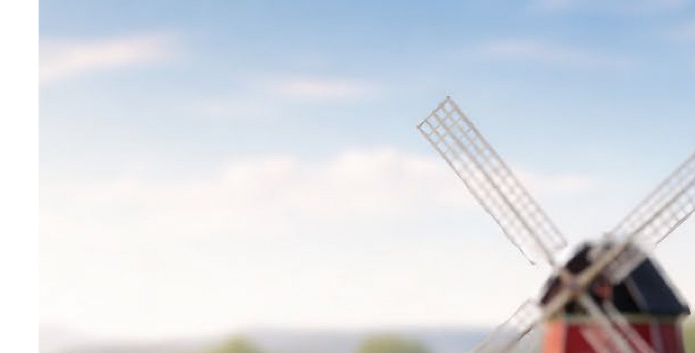
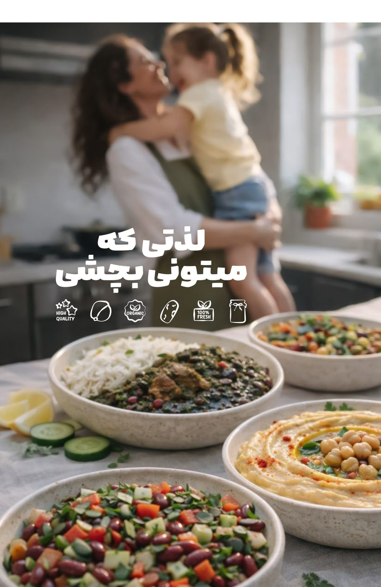
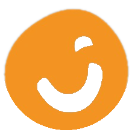
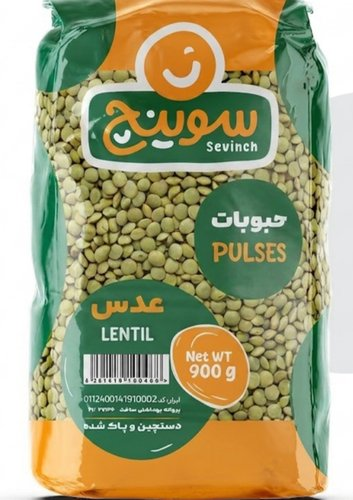
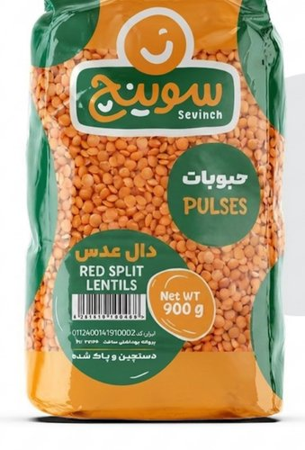
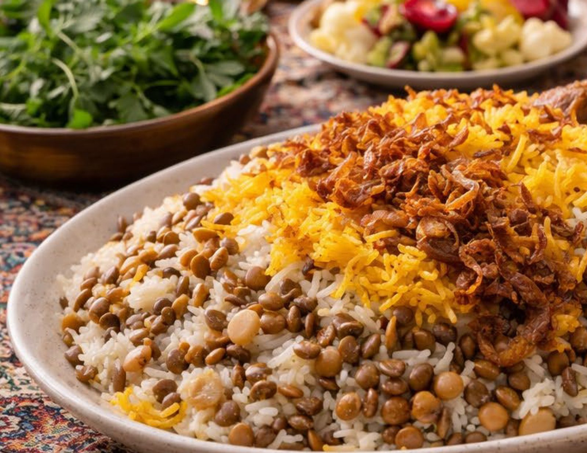

سوینج یعنی شادی؛ حبوباتی دستچین، پاکشده و ۱۰۰٪ طبیعی که از قلب آذربایجان به آشپزخانه شما میرسد. کیفیتی که در هر پیمانه حس میشود.


سوینج باور دارد بستهبندیها فقط نقش محافظ ندارند؛ آنها روایتگر لحظاتی هستند که خانوادهها با محصولات ما تجربه میکنند. از انتخاب دانه تا دستچین و پاکسازی نهایی، همهچیز برای حفظ همان حس اول تا آخرین وعده انجام میشود.
۹ نوع حبوبات دستچینشده، از عدس و لپه گرفته تا انواع لوبیا و نخود — همه با استاندارد کیفی یکسان.

عدس درجهیک، دستچین و پاکشده؛ سرشار از پروتئین و آهن گیاهی، انتخابی عالی برای عدسی و آش.

دال عدس نارنجیرنگ و ریزدانه با زمان پخت کوتاه؛ مناسب سوپهای کِرمی و دال هندی.

لوبیا چشمبلبلی معطر با طعمی خاص و فیبر بالا؛ عالی برای سالاد و خورشهای محلی.

لوبیا سفید درشت و یکدست، دستچین و پاکشده؛ انتخاب اول خورش لوبیا سفید.
برای خرید عمده، همکاری تجاری یا اطلاعات بیشتر درباره محصولات با ما در تماس باشید.

هر بسته سوینج نتیجهی سالها تجربه در انتخاب، پاکسازی و بستهبندی حبوبات درجهیک است؛ تا سر سفرهی شما، طعمی اصیل و بهیادماندنی بنشیند.